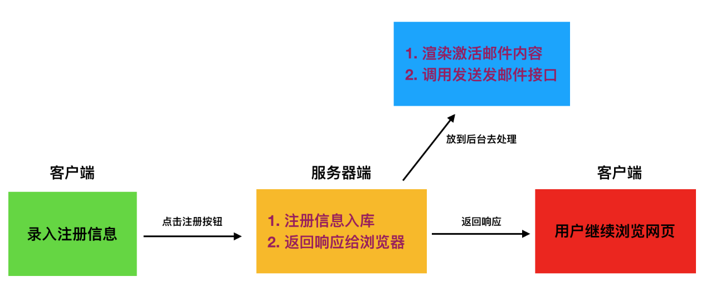

1. 问题抛出
我们在做网站后端程序开发时，会碰到这样的需求：用户需要在我们的网站填写注册信息，我们发给用户一封注册激活邮件到用户邮箱，如果由于各种原因，这封邮件发送所需时间较长，那么客户端将会等待很久，造成不好的用户体验.
那么怎么解决这样的问题呢?

我们将耗时任务放到后台异步执行。不会影响用户其他操作。除了注册功能，例如上传，图形处理等等耗时的任务，都可以按照这种思路来解决。 如何实现异步执行任务呢？我们可使用celery. celery除了刚才所涉及到的异步执行任务之外，还可以实现定时处理某些任务。
celery介绍
Celery是一个功能完备即插即用的任务队列。它使得我们不需要考虑复杂的问题，使用非常简单。celery看起来似乎很庞大，本章节我们先对其进行简单的了解，然后再去学习其他一些高级特性。 celery适用异步处理问题，当发送邮件、或者文件上传, 图像处理等等一些比较耗时的操作，我们可将其异步执行，这样用户不需要等待很久，提高用户体验。 celery的特点是：
- 简单，易于使用和维护，有丰富的文档。
- 高效，单个celery进程每分钟可以处理数百万个任务。
- 灵活，celery中几乎每个部分都可以自定义扩展。
celery非常易于集成到一些web开发框架中.